ISE102 Week 1
- ISE102 Week 1
TO ADD
Get into programming quickly. start right away with input, test, output. That has to be every program.
Less time on hellos
Don’t discuss assessments till week 2. Just explain a1 in week 2 and go hard into not googling tutes on slot machines, not scoring 0 for your assignment. Instead, google “generating random numbers in c++”, “comparing numbers in c++”.
Flowcharts to match psuedocode? Help everyone understand that decisions are key. If, then.
Get past hello world: do a simple app that says hello, asks how old you are.
If you’re older than x, say “you’re old”. If younger, “you’re young”.
Also “What is a console??” Console leads to ‘cin’, ‘cout’.
The flow of the arrows tell us where the info goes, especially if we add more
>>>>>>>>> - looks like its going right
<<<<<<<< - left
Look at pseudocoding and flowcharting here:
https://www.codeavengers.com/notes/planning/flowcharts
Flowgorithm could be perfect, it even outputs c++.
Part 1: Studying Software Engineering
Learning about programming through C++.
- What is programming? Structured problem solving.
- Where did C++ come from, and what is it used for?
- A little high school maths and organised thinking. If you understand computer hardware it won’t hurt.
Who are we?
Me: Danny McGillick. Computer Science @ UTS, Web dev, Creative technologist in advertising (flash/actionscript, unity), 2D and 3D artist for Torus, Halfbrick, Blowfish studios. Keyboard enthusiast, bits maker.
https://cargocollective.com/dmac/ - Flash/Unity
http://www.artstation.com/dmacdraws/ - game art
You: The next makers with long futures.
C++ in a nutshell

Bjarne Stroustrup
- Made by Bjarne Stroustrup in the 80s. Extended C. Still going.
- C was written for computer scientists to compile the same code on most any hardware.
- Big-time game engines, operating systems, your windows apps are written in C++, C.
- Planes and fridges and satellites and watches and particle colliders and power stations. (picture)
- Fast, low level aka “close to the metal”
- No game making tools by default.
- There is free code out there in “libraries” that can help us when it comes to drawing graphics.
- It’s what’s called an Object Oriented language. C was procedural.
#include <iostream> #include <string> // c++ main function int main() { string genre = ""; cout << "Please input your favourite game genre." << endl; cout << "eg: Farming, Cooking, Dancing, FPS, Strategy, Sports, Fighting, Battle Royale." << endl; cout << "Your choice:"; cin >> genre; // User can type response, we store it under "genre" cout << genre << " games are the WORST." << endl; // print our response. return(0); // End program and tell windows there were no errors. }
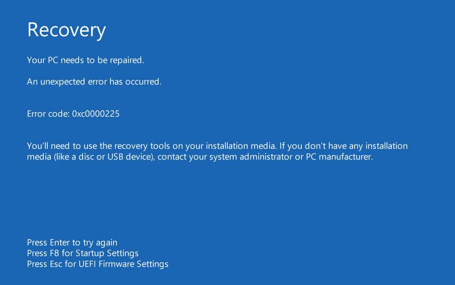
The whole operating falls over
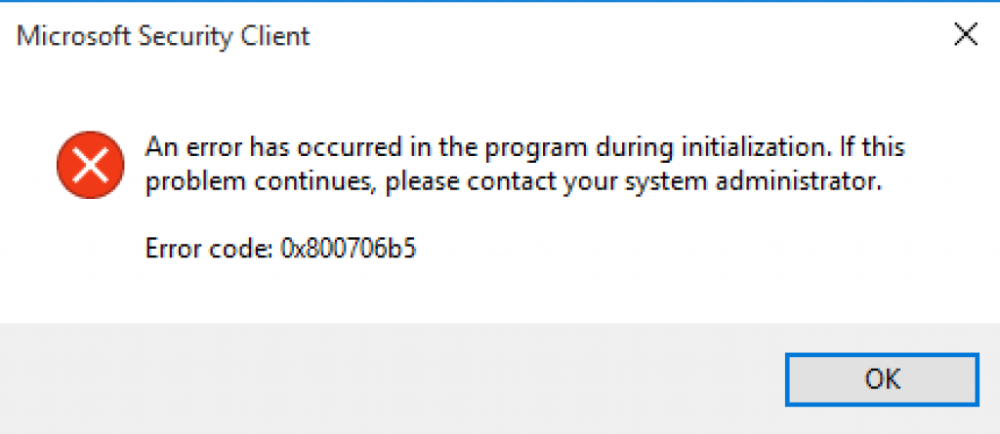
Just your application falls over
Draw over that code what each bit was:
allocate storage,
print things to console,
get input and put it in storage,
produce output using what we stored
graph computers: get input, store things, process things, store more., output.
Flow and Pseudocode
replace with genre flowchart
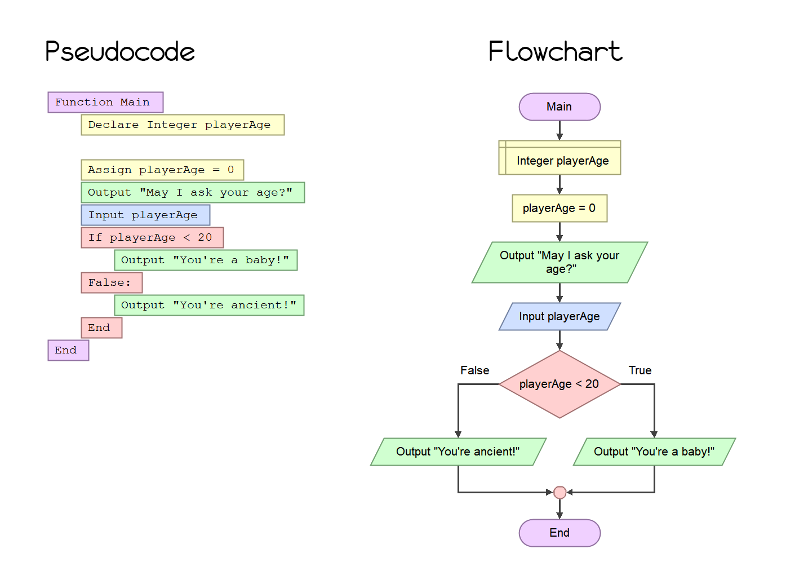
Build it together in flowgorith.
Have everyone build another program in flowgorithm.
Then we export psuedocode to use as comments.
Write the c++ together.
Check answer
link to flowgorithm.
How can we succeed learning c++ in this class?
How are MDS subjects designed, and what do I need to do to get the most from them?
Hour splits and thriving in 2D Games Programming
30% class hours.
70% studying, programming, gaining experience.
The benefit of these courses comes from putting in work between classes. What we learn in class won’t stick if you don’t work and experiment at home.
Blackboard is your friend
Find assignment briefs, due dates, slides, programming tutes/samples and much more. The screenshots are from GPR103 but the structure is cross-subject.
Digging through Blackboard material is the second key to coming out ahead in these subjects, just below coding at home.

Grab the subject outline and subject planner
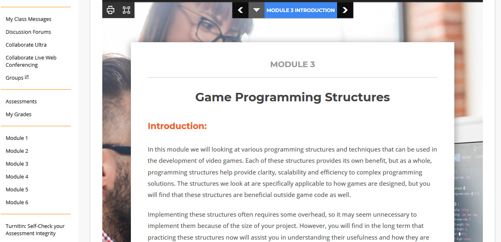
Every subject has modules in the left menu. Click one for important info
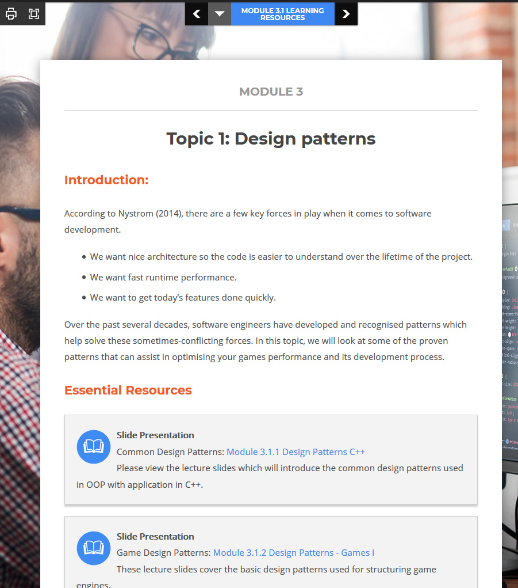
The blue button, top of screen, takes you to more info and resources. Don’t skip the learning resources
Recommended texts
Beginning C++ Through Game Programming is available free when you’re logged in to black board. Go to https://ebookcentral-proquest-com.ezproxy.laureate.net.au/lib/think/detail.action?docID=3136727 and download chapters as free pdfs.
My notes are your friends
The original course notes are in powerpoint, and available from the module pages in Blackboard. I write up new ones (like the one you’re reading) for most lessons and post them on Git. The url pattern is:
https://dmcgits.github.io/mds/ISE102/week1_notes.html
If I post an announcement before class I will often post an html notes link.
Assessments
3 Assessments. It’ll require a solid effort at all 3 to pass.
Assessment 1
Text based slot machine. Due end week 6
Assessment 2
Exam covering material from mostly first 2 modules (first 4 weeks). Due end of week 7
Assessment 3
Snake game with ascii graphics. Due end of week 12

Yes that snake game
Part 2: Programmings is handling situations
Programming is usually defined around computers and compiling and so on. But really, that’s the implementation. We’ll get to that, but we’ll have a much easier time if we’ve thought first about what programming really is:
Programming is just a) defining situations and b) responding to them with actions.
Here’s a simple program:
start program I_SPILLED_COFFEE
If I got some on my shirt:
If I'm in public:
Wipe it a bit with a serviette.
If it's a new shirt:
Find restroom
While I can still see coffee:
Rinse it with a bit of water
Pat with a paper towel
Dry it a bit with hand dryer
Otherwise, if I'm not in public:
Take off shirt
Spray with stain remover
Put in washing machine
Put on another shirt
end program I_SPILLED_COFFEE
We can all understand a program written like this. It’s a situation, based on some information we received from our eyes and maybe wet our hand. Then we check a few things, and based on those we acted. In one case we did something over and over till it worked.
Writing a program like this is writing in psuedocode. Psuedo as in “kinda”. It’s kinda code, but not specific.
Why not just write it in c++?
Well, here are programming languages that can github can hilight for you:
https://github.com/github/linguist/blob/master/vendor/README.md
… and a lot of them are very different. Which one is the way to teach problem solving? Trick question.
Code is us telling the computer how we want it to handle situations. It’s designed for computers to understand, and our brain works hard when we read and write it. Abstract problem solving is really hard too - why do both at the same time?
We don’t need to start coding right away. We can solve some of the problem first, and then tell the computer when we’re done.
Whitespace
Why did I tab out a lot? Whitespace really helps us understand things, more than just adding more characters.
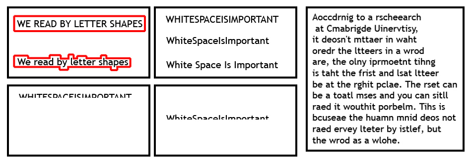
Problem solving tools
If I got some on my shirt: <-- First check
If I'm in public: <-- Second check
Wipe it a bit with a serviette. <-- action
We check something, and based on the result, we act. This is called a conditional. Our check evaluates to true or false: true, I do have coffee on my shirt. true, I am in public. I better perform an action, hand me that serviette.
While I can still see coffee:
Rinse it with a bit of water
Pat with a paper towel
Sometimes one action isn’t enough. It’s a repeated process of checking, acting, checking again. While something is true, keep doing this action. This is a loop.
start program I_SPILLED_COFFEE
...
end program I_SPILLED_COFFEE
A situation occurred. Our response is a program. Is there a better way to describe what the brain is full of? A whole bunch of responses to things we experience. I’m hungry! I’m tired! I want to browse the web! A car is coming at me!
We have a program to handle the situation I spilled my coffee. It has:
- Information (the state of our shirt and coffee, our location)
- Conditionals (checking those states and deciding on a path)
- Actions (Things that we do in response to the check results)
- Loops (A combination of a check and some things to do, repeated)
- A Beginning And End
This is the key to coding.
The problem solving tools above are common across programming languages.
Coding is, first, problem solving. This means dissecting the problem and creatively solving it. The syntax is just a way of communicating that solution to the computer, and you’ll use multiple languages/syntaxes through your career.
From pseudocode to source code
Like all languages, a programming language has
Vocabulary -> Keywords
Grammar -> Syntax
A file with syntax and keywords in it contains… source code!
Keywords are words that have a special meaning to the compiler, like int and using. Wikipedia defines syntax for us:
the syntax of a computer language is the set of rules that defines the combinations of symbols that [make a working program]
Good news is, once you’ve learned a language it’s not nearly as hard to switch as the spoken ones:
There are only 73 special or reserved words in C++
There are on average 20,000 words a native English speaker uses.
Hello world
Our situation is waking up, our problem is: how should I face the world? Solution? I’m going to greet it. Our psuedocode:
start program I_WAKE_UP
Say hello to the world.
end program I_WAKE_UP
Our c++ code for that solution:
#include <iostream> using namespace std; int main() { cout << "Hello world!" << endl; }
Let’s code that!
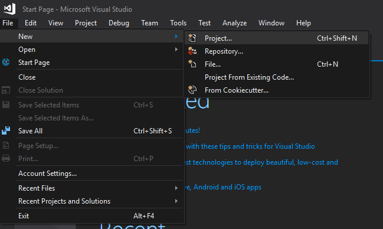
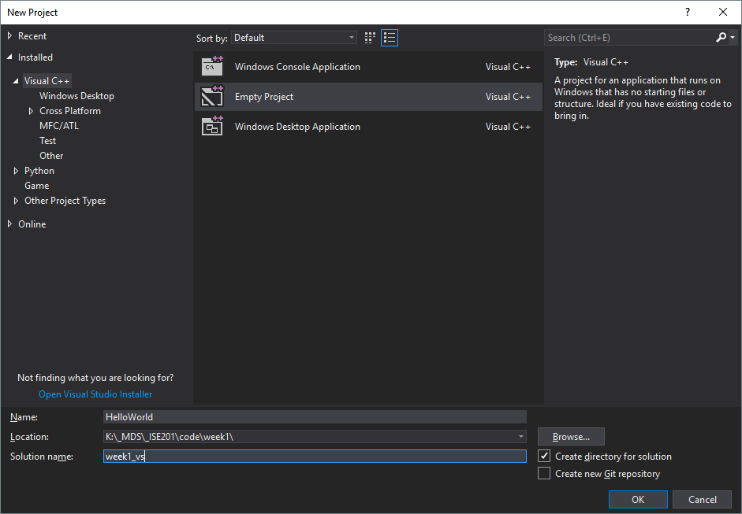
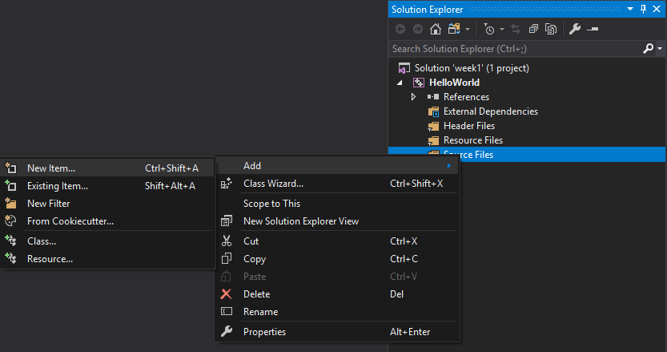
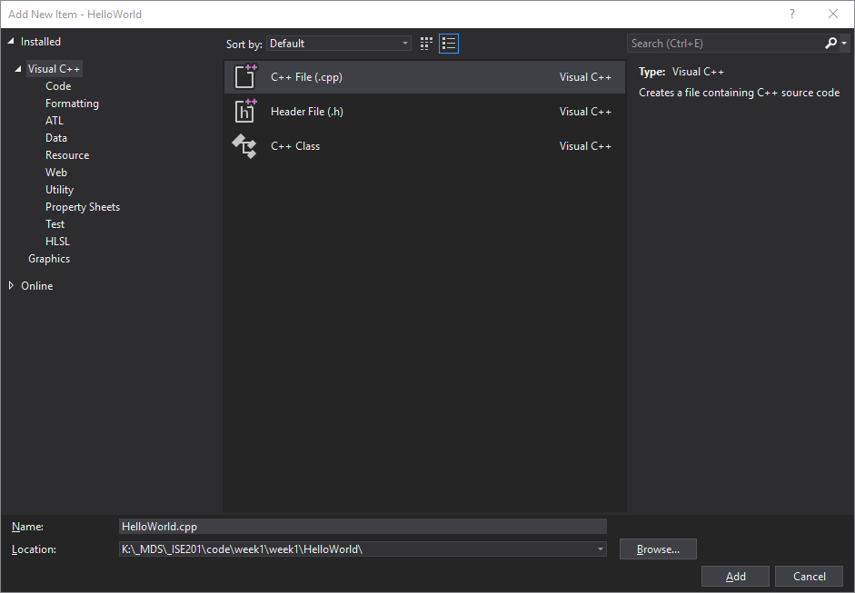
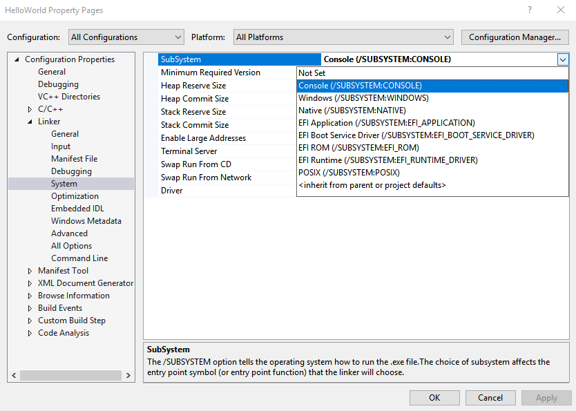
This setting will keep the console from closing when your program ends
I recommend pausing your antivirus. For example, I turn off avast shields for 1 hour. Otherwise it’ll intercept your new code.
Even something this brief is less clear in code, so make your life easy.
Let’s understand that!
What was the syntax? What were the keywords? You can play with the code along with me, or watch and do it later.
Blocks {} and ending a line of code ;
The C++ compiler mostly doesn’t think about whitespace like us. Some languages do, but not C++. It would actually be happy with this:
#include <iostream> using namespace std; int main() { cout << "Hello world!" << endl; }
…but we would be very sad. Thankfully, the c++ syntax for blocks and lines of code is pretty easy
// We use the curly braces { } to define a block of code that should be grouped together. This includes all the code inside the main() function. int main() { // all your code here }
So use tabs, enter and space to make your code clear, and always remember ; to end your lines.
// When c++ finds a semi colon, that's a finished line of code. int ageOfBarry = 47; cout << "Barry's age is" << ageOfBarry << endl;
What is using namespace
using namespace std;
This lets us use code written by other people without having to put a path before it. cout, endl are in the c++ standard library, so…
// without "using namespace std" we'd get a compile erour /// .. unless we do this: std::cout << "Hello world!" << std::endl; // gross // The prefix std is the name of the library, and the // double colon :: is the syntax for accessing a library // function or variable.
C++ Comments
There is only so much you can work out from reading someone else’s code. Intent and thinking can be lost in translation.
Especially if the coder made mistakes. That’s why we use comments. Think of them like footnotes in a book, or the margin comments in a textbook. Except even more important.
#include <iostream> #include <string> // Anything written on one line after a double slash is ignored by the compiler /* Anything written between these two slash and star symbols will be a comment over two lines. We can comment out whole blocks of code this way during testing */ using namespace std; int main() { // Here's a variable to store the user's first name String firstName = ""; // cout will output information to the user cout << "Enter your first name: "; /* cin will wait for the user to type a word and press enter, then assign the result to a variable after the >> symbol. */ cin >> firstname; cout << "Hello " << firstName << endl; }
Compiling and running your game
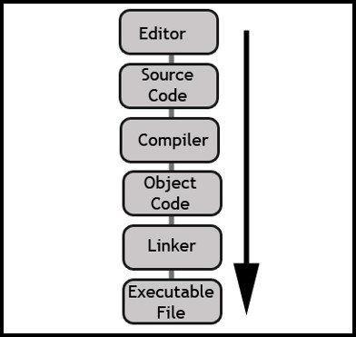
1. Source code
Instructions for a computer to handle given situations and perform certain tasks. The source code will be written in the syntax and grammar of a particular programming language; in our case, the language is c++.
2. Compiler
A compiler reads your source code and usually converts it into machine code. This will be the specific instructions for a target computer and operating system, say windows x86 intel.
3. Object code
The machine code output by the compiler, often with a .o extension. Your c++ compiler will also have on hand object code for the libraries it includes
4. Linker
The linker takes your object code and looks for references to other code. This can be your own from multiple c files, or references to standard/downloaded libraries. It then inserts the referred-to machine code into your own and creates a single .exe file. There are other types that can be created, like dynamic libraries, but we’ll discuss those later.
5. Executable File
This is your finished product. It’s ready to be double clicked, run from the command line, launched from Steam/Battle.net or any other way you begin loading it.
6. Loader
The operating system executable that will load your executable into memory and begin execution. This is how it goes from instructions on an SSD/HDD to a running, interactive program.
We’ll be using Microsoft Visual Studio 2017, an Integrated Development Environment, to write, compile and debug all our code.
Part 3: Exercises
1. Basic input/output documentation
Read through http://www.cplusplus.com/doc/tutorial/basic_io/ and try the different variations provided in the Standard output (cout) and Standard input (cin) sections.
2. Sololearn quiz
Attempting to recall this info in different contexts will help you retain it. Sololearn quizzes are great for low pressure review.
- Install Sololearn for android or ios.
- Register
- Go to the learn section and select the C++ Tutorial under programming languages.
- Select Basic Concepts and work through the first 5 sections (up to and including comments) to revise today’s learnings
- Continue through the next 4 sections on variables and basic maths to be ready for next week’s topics.
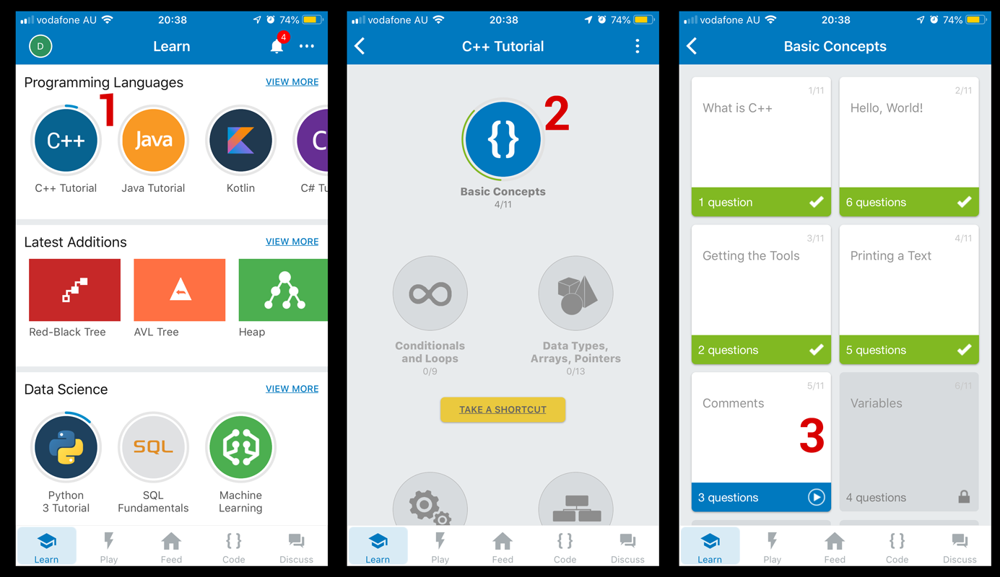
3. Optional: review textbook chapter 1
Make sure you’re logged in to blackboard and visit: https://ebookcentral-proquest-com.ezproxy.laureate.net.au/lib/think/detail.action?docID=3136727
Appendix 1: Install Visual Studio Community
Microsoft’s longer, more detailed version of the following instructions is here: https://docs.microsoft.com/en-us/cpp/build/vscpp-step-0-installation?view=vs-2017
If you already have Visual Studio: search for and run the Visual Studio Installer, select More > Modify (next to the launch button), then go to step 3. Otherwise,
- Go to https://visualstudio.microsoft.com/vs/older-downloads/. Don’t click “Download Visual Studio”, instead scroll down and expand “2017” to download.
- Run the installer. At a point it will ask you to select a workload.
- Under Workloads you’ll see the Windows section. Select _Desktop development with C++.
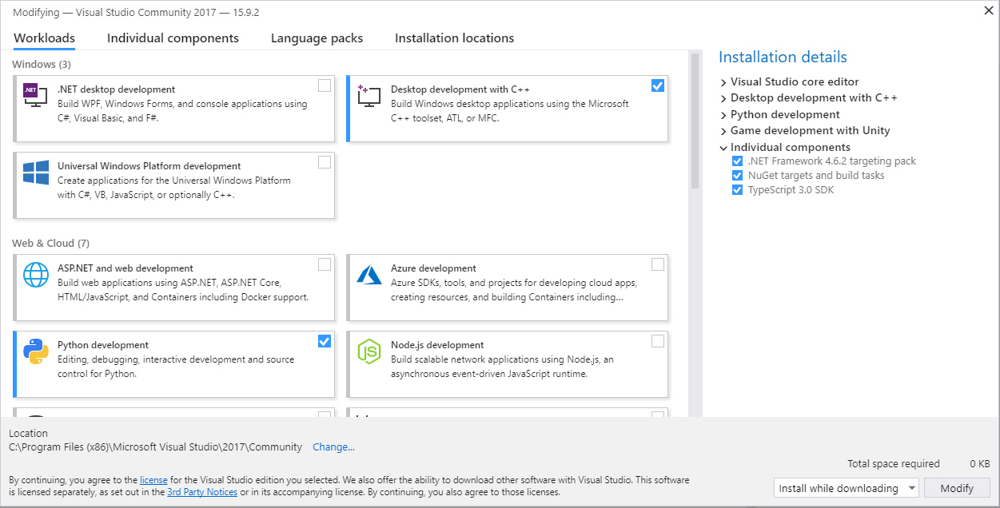 - At the bottom right set install while downloading and click modify or install (whichever you have).